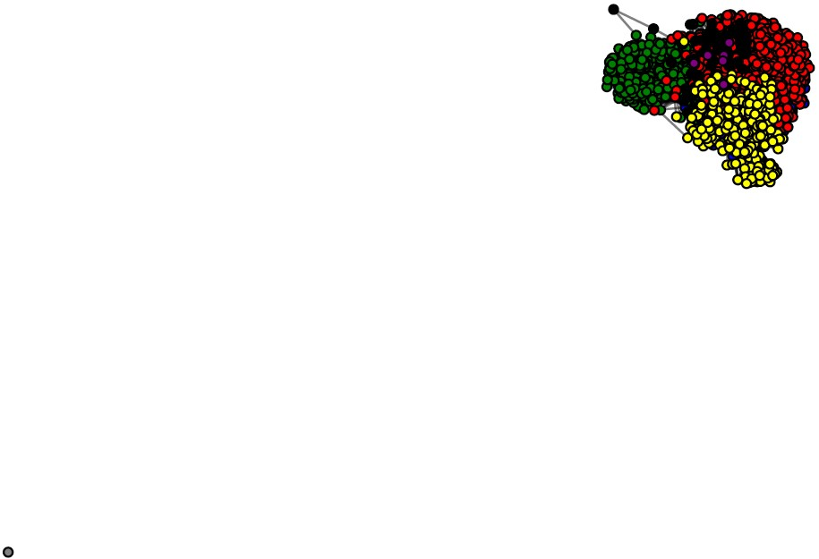

Notes about visualisations
You'll find a wide variety of super cool plots while scrolling down to know more about our project.
And guess what ? All of the plots are interactive, that means you can zoom in, select parts of the data, filter out categories, compare plots, and much more. Don't be shy, try them out !
Introduction
The 2016 US elections have been a raging war on social media and especially Twitter due to an incredible amount of people (including the candidates) using this media !
You probably heard about this social media concept called "media bubble", this concept explains that you and your friends tend to have the same views on many subjects. That's one of the reasons why so many people were shocked about Donald Trump's election, they simply didn't see it coming.
So all in all, don't you want to know what the world really thought during november 2016 ? Don't you want to discover what were the trendy hashtags, what Sunshine420too has to say about these elections or simply to konw who the hell Sunshine420too is ? Then this page is made for you !
We'll go through some nice data statistics providing great plot and top tweets such as
If Donald Trump takes people's anger and turns it against Muslims, Hispanics, African Americans and women, we will be his worst nightmare.
— Bernie Sanders (@SenSanders) November 10, 2016
"To all the little girls watching...never doubt that you are valuable and powerful & deserving of every chance & opportunity in the world."
— Hillary Clinton (@HillaryClinton) November 9, 2016
Find out how we did all this ! We'll also analyze a Twitter network made of user

Cool right ? And finally we'll run a sentiment analysis to find out what people reactions were !
Thanks for reading, enjoy !
Data Overview
The data we are analyzing is a collection of tweets from Twitter retrieved during the period of the elections. For this, we focused on collecting tweets from the week prior to election day to the week after election day.

To retrieve the data, we came up with custom queries to collect tweets related to the elections, by using hashtags and focusing on some countries of the world that seemed relevant to study.
In total, after collecting more than 4GB of tweets, we extracted 90909 unique tweets and 68359 unique users.
A first interesting overview of the data is to see how many tweets we collected per hour during the elections:
The spike we see is on November 9, which is #ElectionDay.
To get a glimpse of the data we have, let's check out the most retweeted and favorited tweets during the elections:
-
TODAY WE MAKE AMERICA GREAT AGAIN!
— Donald J. Trump (@realDonaldTrump) November 8, 2016 -
This is an embarrassing night for America. We've let a hatemonger lead our great nation. We've let a bully set our course. I'm devastated.
— Chris Evans (@ChrisEvans) November 9, 2016 -
My newest horror story: Once upon a time there was a man named Donald Trump, and he ran for president. Some people wanted him to win.
— Stephen King (@StephenKing) October 21, 2016 -
If Donald Trump takes people's anger and turns it against Muslims, Hispanics, African Americans and women, we will be his worst nightmare.
— Bernie Sanders (@SenSanders) November 10, 2016 -
HOLY SHIT THERES A TRUMP PROTEST ON CLUB PENGUIN RIGHT NOW pic.twitter.com/tY33Hq2mvi
— Lourdes (@gossipgriII) November 13, 2016
You didn't expect to see a Trump protest on Club Penguin, right ?
Let's now see which users were the most retweeted:
-
Wow, the @nytimes is losing thousands of subscribers because of their very poor and highly inaccurate coverage of the "Trump phenomena"
— Donald J. Trump (@realDonaldTrump) November 13, 2016 -
#RonPaul on #US election: "The greatest thing happened is the evidence & information we got from #WikiLeaks" https://t.co/2dJU6gDBks
— WikiLeaks (@wikileaks) November 15, 2016 -
I hope today we defeat Donald Trump and we defeat him badly. https://t.co/8ttsSwcsnl pic.twitter.com/4Q1JDdglhV
— Bernie Sanders (@BernieSanders) November 8, 2016 -
"To all the little girls watching...never doubt that you are valuable and powerful & deserving of every chance & opportunity in the world."
— Hillary Clinton (@HillaryClinton) November 9, 2016 -
We have a president-elect who doesn't believe in climate change. Millions of people are going to have to say: Mr. Trump, you are dead wrong. pic.twitter.com/Xc77gh3Iui
— Bernie Sanders (@SenSanders) November 13, 2016
The results come mostly from candidates to the elections, with the exception of WikiLeaks that played an instrumental role in shining light on the practices of the US politicians to the public..
Now let's have a look at the distribution of tweets based on the queries we performed using hashtags:
If we only focus on #Elections2016, #ImStillWithHer, #PresidentElectTrump, #TrumpRiot, and #NotMyPresident to track a few particular hashtags, we can see some interesting results:
The last plot shows us that the #Elections2016 vanished on the election day, to give space to #PresidentElectTrump. We also see a few reactions on the election day and when there was riots.
Focusing on the last part of our data, we can see which countries were the most active during the elections:
Clearly, and logicially, we can see that apart from the US, the UK is also very active, along with Canada that tweeted a lot of November 9, Australia, India, and South Africa. This is quite logic as those countries speak primarly English or were British colonies. On November 9, South American countries also reacted vividly to the elections, with Brazil and Mexico. In Europe, France and Germany leaded the way, followed by Sweden, and Denmark.
If we know look at some countries that we selected to make the plot clearer, we can see that apart from the US, Canada, and the UK, the other countries tweet more or less the same throughout the days during the elections, with the expection of a spike on election day.
To finish our overview of data, we'll visualise which countries were the most active during the elections on a world map:
Twitter Network
In this part we will talk about our network and all our discoveries.
The goal of this directed network is to group every user we got from the scrapped tweets and their friends (e.g people they are following) and go through different step to show :
- What kind of connection they share
- If they follow the same people or not ? What does that mean ?
- Do they belong to the same community ?
First results
With the help of the Twitter API we can build this graph by connecting our user with a direct link to the account they follow ! In the end we have a brand (big!) new graph that has 64728 node and 78788 edges. If we have a look at the biggest accounts in terms of follower (nodes' in degree) we run into famous names such as : wikileaks, BarackObama, realDonaldTrump or HillaryClinton.
But looking at the biggest accounts in term of friend (nodes' out degree) we have less known and average people
Now that we have our graph we can have a look at the degree distributions (e.g try to indentify if the degree distributions follow some kind of function):

In Figure 1 we can see that the most common in degree is 2, with more than 50k occurences, but after 6 in degree it seems we have no more nodes. However the out degree distribution is way broader. very few users have the same out degree but it goes from 0 to roughly 5000.
Figure 3 - Plot of distributions on a log-scale.The in degree distributions seem to approach a power-law as we can see the long tail (Figure 3) at the begining where the number of nodes with low degrees is really high and then it decreases as a power-law (with a few fluctuations that mean we have a few high influential individuals that have a lot of followers).
We can see that the in-degrees and out-degrees do not follow the same curve. This means that we can't expect to have as many connections coming in than coming out. And this interpretation makes sense as our network was build from a social media platform : we tend to follow more people than we have followers. On the other hand, the blue curve (and the out degree distributions in general) is pretty chaotic, we can't tell if it follows any particular distribution.
The graph is way too big to be drawn, so we decide to make a smaller graph. The idea is to keep the node with a degree greater than 3 only. We have a lot of isolated accounts that are quite useless in this centrality analysis. The new graph had now 2785 nodes and and 12228 edges.
As we were exepecting, it seems like we have a few central accounts and thousands of smaller ones gravitating aroung them. To learn more about these central accounts we will now go through some centrality measures. We perform these algorithms on the reduced network as these measures are very costly. Betweeness centrality measures how central a node is. Users with a high betweenness centrality may have a good followers/following ratio. We will look into these accounts later on.
Betweeness : The 5 most central accounts are :
- Trevor90666770
- sallykohn
- stuartpstevens
- StevenTDennis
- sanchezcan
Eigen centrality : The 5 most central accounts are :
- sallykohn
- sanchezcan
- StevenTDennis
- stuartpstevens
- kurteichenwald
In degree centrality : The 5 most central accounts are :
- wikileaks
- realDonaldTrump
- BarackObama
- POTUS
- HillaryClinton
These names are familiar but...
out degree centrality : The 5 most central accounts are :
- sallykohn
- sanchezcan
- StevenTDennis
- stuartpstevens
- kurteichenwald
... these ones aren't. And once again, that makes sense, famous users will have more followers, but as an average person, you can follow as many people as you want !
Conclusion :
The results we have on centrality measures let us think that we have quite a good network. We have famous people with a lot of followers and Twitter addicts with a lot of "friends". It is also interesting to note that the betweeness centrality and the eigenvector centrality do not provide the exact same results. It will be interesting to see if we come across these names again when dealing with communities (and we'll see who these people actually are !).
Community
To perform community detection we'll use the Louvain algorithm. The inspiration for this method of community detection is the optimization of Modularity as the algorithm progresses. Modularity is one measure between -1 and 1 of the structure of networks. It was designed to measure the strength of division of a network into modules (also called groups, clusters or communities). Networks with high modularity have dense connections between the nodes within modules but sparse connections between nodes in different modules. (Wikipdia)
We got a louvain modularity of 0.4, we can say this modularity is pretty high, which means we have good partitions in our network.

Communities in the networkWe have 7 communities and we can see once more that one group is completely disconnected from the others. That is probably due to the first graph reduction (from 64k nodes to 2k nodes). This accounts had a lot of followers but they weren't popular so they've been removed. Now we have this isolated community while the others are connected.

Let's dig into these communities.
Alright, we have a lot of informations to processe here, so we'll work community by community. Next to account's name we provide the Twitter descriptions and/or a general description.
Community 0
According to the in degree
- NASA : National Aeronautics and Space Administration
- wikileaks : Publishes and comments on leaked documents alleging government and corporate misconduct.
- BillGates : an American business magnate, investor, author and philanthropist.
- washingtonpost : Breaking news and analysis on politics, business, world national news, entertainment more.
- AP : The Associated Press is the essential global news network, delivering fast, unbiased news from every corner of the world to all media platforms and formats.
- BernieSanders : Bernie Sanders is the longest serving independent in congressional history. Ran for presidence
- BBCBreaking : Breaking news alerts and updates from the BBC
And then by out degree are :
- PPolenberg : Peggy Polenberg Real Estate-Broker specializing in Hudson Valley Residential & Commercial sales & leases. (Anti Trump) wikileaks : ...
- GreenPartyUS : Official Twitter account of the Green Party of the United States (Independant)
- macdoodled : short time WAC/disABLED/ Wanted2start non profit Art Therapy for vets. ART HEALS. VA / social svcs fails lowest income disabled homeless -lost all -done.
- sulaimanslalani : Exec Dir GEO TV Network. Syndication, acquisition, films, advocacy campaigns. Squash freak.Globetrotter. Beatles/Sinatra/Dylan/Cash. Optimist forever!
- Independent : News, comment and features from The Independent
- JesseBenn : Just some guy who writes things. Raising a rebel. Married to #1 mom. Member of the Tribe. Dissident. Leftie. Fomenting rebellion. UW J-School PhD student.
- ajplus : AJ+ is news for the connected generation, sharing human struggles, and challenging the status quo.
Conclusion :
Looking at the results we have and the twitter account's descriptions we can spot two main ideas : independant and left. This community is made of people who claim to be independant, unbiased, left winged and against politicians such as Donald J. Trump. It also seems that these users (the real person behind) are quite educated (PhD, Exec Dir, BUsiness, Bill Gates, Wikileaks...)
Community 1
The top ten accounts by in degree are :
- JudgeJeanine : Judge Pirro is a highly respected District Attorney, Judge, author & renowned champion of the underdog. She hosts the Fox News show, Justice with Judge Jeanine.
- seanhannity : TV Host Fox News Channel 10 PM. Nationally Syndicated Radio Host 3-6 PM EST
- mike_pence : Indiana Governor Mike Pence, Vice President-elect of the United States
- SheriffClarke : Sheriff Milwaukee Co. MA Security Studies NPS. NRA Member. CPAC Charlton Heston Courage Under Fire Award. NYPD/NYC Police Benevolent Asso. Person of the Year
- RealBenCarson : The Official Twitter Page of Dr. Ben Carson.
- LouDobbs : Lou Dobbs Tonight, Fox Business Network, 7 & 11 pm
- DonaldJTrumpJr : EVP of Development & Acquisitions Trump Organization and Boardroom Advisor on the Apprentice.
The top ten accounts by out degree
- Trevor90666770 : Trump supporter who is NOT racist & wants to MAGA! George Soros & Hillary for Prison. Straight white cis male scum (definitely a "troll"
- halsteadg048 : Americans.. We Have A New Champion Of We The People Who Will Listen To Our Needs. God Bless
- jojoh888 : America will be great again with #PresidentTrump #DrainTheSwamp #
- shabeau2 : I did not begin this journey on the Trump Train. I researched, listened, watched, read and then made an educated decision to climb aboard. Bless DJT-
- Sunshine420too : Joined to be aboard the Trump
- FoxNews : America’s Strongest Primetime Lineup Anywhere! Follow America's #1 cable news network, delivering you breaking news, insightful analysis, and must-see
Conclusion :
This community is cleary made of Trump supporters and on a larger scale, republicans. We can see a lot of FOX News TV host, a TV channel which strongly supported Trump during the campain (and still does). We also have different personnality from Trump familly, board, government... When looking at the top accounts by out degree we come accross strongly patriotic users (a lot of Star Spangled Banners and bald eagles on the pages) and Trump supporters. Two things to notice however :
Trump isn't in the top account, which is a odd, and we have at least one "troll" account (Trevor90666770) and we may have some more that would probably biase the sentimentCommunity 2
The accounts by in degree
- KeithOlbermann : GQ Special Correspondent: THE RESISTANCE. On Bojack Horseman. Denounced by Trump. Saying nice things about Canada since
- SenWarren : Official twitter account of democrat Senator Elizabeth Warren of
- JoyAnnReid : Joy Reid, is a national correspondent at MSNBC, American cable television host and political
- elizabethforma : United States Senator from Massachusetts.
- politico : Nobody knows politics like
- FLOTUS : This account is run by the Office of First Lady Michelle
- ChelseaClinton : Mom, Wife, Author #ItsYourWorld, Vice-Chair/Champion of all things @ClintonFdn, @ClintonHealth, New
The accounts by out degree are :
- sallykohn : Writer and CNN political commentator. Sometimes lovable
- stuartpstevens : Writer, political consultant, obsessive but lousy endurance sport junkie. Partner, @Strat_Media,Daily Beast columnist. Author of 7 books.
- StevenTDennis : @Bloomberg reporter. Senate, politics. Ex-White House, House, Md Politics. Dad to 3, Terp, Truth-teller. Opinions are my own.
- sanchezcan : Fit for knowledge, enjoy quality fútbol where ever it exists, strengthen my spiritual beliefs & enjoy talented people in the arts - University of Colorado
- kurteichenwald : Contributing editor, Vanity Fair; senior writer, Newsweek; New York Times bestselling author.
- JStein_Vox : Writing politics @ http://www.Vox.com . Formerly Ithaca Voice: http://bit.ly/2awfr0K . Mats Zuccarello fan.
- bad_bad_bernie : Saying true things that many are too nice to say. Mostly respectful, but always direct. #NoDAPL #NeverTrump
Conclusion :
This community is now Democrat. We have a senator, Michelle Obama and Chelsea Clinton but democrat journalists such as CNN/Bloomberg reporters. Once again we have to notice that Hillary and Obama aren't in the top accounts (also uncanny)
Community 3
- DavidLimbaugh : A lawyer, columnist, and
- gatewaypundit : Blogger- Activist- - Where Hope Made a Comeback
- BuckSexton : Host, The Buck Sexton Show on theBlaze; Ex-CIA. Ex-NYPD Intel.
- MichaelBarone : Michael Barone is Senior Political Analyst for the Washington Examiner, co-author of The Almanac of American Politics and a contributor to Fox News.
- NolteNC : Editor-At-Large at Daily Wire
- kausmickey : The End of Equality [1992, Basic Books] The venerable liberal crusade for income equality is doomed. ... Time [to] try a different strategy.
The top ten accounts by out degree
- AnnCoulter : Ann Hart Coulter is an American conservative social and political commentator, writer, syndicated columnist, and
- CharlemagSteak : Texan. Romantic Adventurer.
- JamesEdwardsTPC : Host of The Political Cesspool. As seen on: CNN, Fox News, MSNBC, C-SPAN, New York Times, Washington Post, Newsweek, U.K. Daily Mail, and a few hundred others.
- starwars : The official home of Star Wars on Twitter
- DennisPrager : Host of the Dennis Prager Show. Founder of @PragerU. Best-selling author. Columnist. Fan of cigars, stereo, the @LAKings and, of course, this wonderful country.
- zerohedge : No description
- RMConservative : Senior Editor at https://www.conservativereview.com/ Conservative writer, policy analyst,
Conclusion :
It is really difficult to label this community. We have a lot of different users indeed. From TV host, to average users and even the star wars account... It seems this community is a big melting pot and it will be hard to get any trustworthy result, so we won't spend too much time on this one.
Community 4
The accounts by in degree are :
- edsheeran : British singer
- rihanna : American singer
- ArianaGrande : American singer
- adamlambert : American singer
- NiallOfficial : American singer
- onedirection : Boys band
- Harry_Styles: He is known as a member of the boys band One Direction.
The accounts by out degree
- troyesivan : Australia-based singer and actor
- tyleroakley : American YouTube and podcast personality, humorist, author and activist.
- RandallJSharp : Womanist | Pro-Black | SJW | My purpose in life is to help black people progress ECONOMICALLY, EDUCATIONALLY, POLITICALLY, SOCIALLY, & PSYCHOLOGICALLY #BLM
- pshimmallama : Bosnian I watch way to many tv shows and I tweet about them. I my .
- AshtonsFalcon : Spelling isn't my thing nor writing a bio | multi-fandom | Noticed by my sunshines; BIEBER, CLIFFORD, OAKLEY !
- ladygaga : American
- hollet1227 : No description. Pro
Conclusion:
And here comes the show business community. We have indeed a lot of singer/podcaster and of course their little fandom. We can see this community as the trendy artists followed by young people. These artist claimed to follow HIllary Clinton during the campaign.
Community 5
- HarvardBiz : The leading destination for smart management thinking.
- WSJ : Breaking news and features from the Wall Street Journal.
- SECNetwork : SEC Network is an American television channel that is owned by ESPN Inc. The channel is dedicated to coverage of collegiate sports sanctioned by the Southeastern Conference (SEC) including live and recorded event telecasts, news, analysis programs, and other content focusing on the conference's member schools
- Forbes : Business news and financial news by Forbes.com. Core topics include business, technology, stock markets, personal finance, and lifestyle.
- SEC : ..
- WSJbusiness : ..
- duckiller01 : No description, random account
Conclusion :
This community seems to be focused on business and financial news. We see huge business news papers such as Forbes or the Wall Street Journal. This community is said to be neutral.
Community 6
- jlllisaurusrex : No description
Conclusion :
- jlllisaurusrex : No description
Conclusion :
This user is unclassifiable. After going through her feed, nothing stands out but random retweet. There's no real need to consider this community.